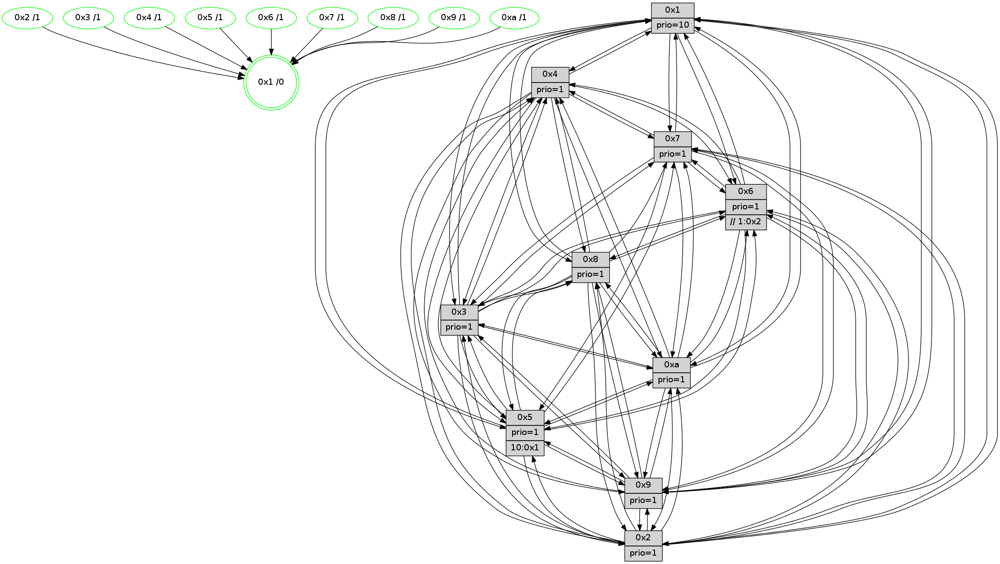

>> << IDX [start] -100 -25 -5 +0 +5 +25 +100 [1465.56408]
 Previous packets
----------------------------------------------------------------------
1460.047163 beacon01(faad) #0 coord=01,02,03,04,05,06,07,0a,09,08 cycle=688.0ms assoc
-- color-indic=1 64 51 24
1460.057145 beacon02(faad) #0 coord=01,02,03,04,05,06,07,0a,09,08 cycle=688.0ms assoc 64 c2 15
1460.067145 beacon03(faad) #0 coord=01,02,03,04,05,06,07,0a,09,08 cycle=688.0ms assoc 64 b8 58
1460.077146 beacon04(faad) #0 coord=01,02,03,04,05,06,07,0a,09,08 cycle=688.0ms assoc 64 cf b2
1460.087145 beacon05(faad) #0 coord=01,02,03,04,05,06,07,0a,09,08 cycle=688.0ms assoc 64 b5 ff
1460.097146 beacon06(faad) #0 coord=01,02,03,04,05,06,07,0a,09,08 cycle=688.0ms assoc 64 3b 28
1460.107145 beacon07(faad) #0 coord=01,02,03,04,05,06,07,0a,09,08 cycle=688.0ms assoc 64 41 65
1460.117149 beacon0a(faad) #0 coord=01,02,03,04,05,06,07,0a,09,08 cycle=688.0ms assoc 64 30 6e
1460.137153 beacon08(faad) #0 coord=01,02,03,04,05,06,07,0a,09,08 cycle=688.0ms assoc 64 c4 f4
1460.149696 [Hello(1): seq=840 sym=4,2,9,5,10,3,8,6,7 sysInfo=coloring-mode-on,ColoringModeRequestCalled stat=4:13,0,0,4/2:2,9,11,6/9:9,6,11,2/5:14,3,14,10/10:4,13,14,8/3:9,8,15,11/8:9,11,12,5/6:8,3,11,2/7:9,11,3,2]
1460.152839 [STC(9)->1 #0.255 tree-change,inconsistent-stability,stable,to-color d=1]
1460.154336 [STC(10)->1 #0.255 tree-change,inconsistent-stability,stable,to-color d=1]
1460.155739 [Color(9) seq=490 @0:0 prio=1]
1460.157775 [Hello(3): seq=931 sym=1,7,6,2,4,8,9,10,5 sysInfo=hasWarning stat=1:0,13,5,0/7:14,5,4,15/6:6,8,8,3/2:3,5,1,0/4:6,12,7,14/8:8,5,12,7/9:12,14,14,1/10:11,7,3,5/5:0,6,2,2]
1460.160511 [Hello(5): seq=931 sym=7,6,4,3,1,9,8,10,2 sysInfo=hasWarning stat=7:13,11,5,1/6:1,3,0,0/4:4,1,13,0/3:8,14,1,3/1:0,6,9,0/9:2,14,3,11/8:1,9,12,6/10:14,0,9,9/2:10,11,15,8]
1460.164933 [STC(5)->1 #0.255 tree-change,inconsistent-stability,stable,to-color d=1]
1460.166305 [STC(3)->1 #0.255 tree-change,inconsistent-stability,stable,to-color d=1]
1460.167742 [Hello(6): seq=931 sym=3,2,5,4,7,9,8,10,1 sym= sysInfo=hasWarning stat=]
1460.170641 [Color(10) seq=520 @0:0 prio=1]
1460.171916 [Color(3) seq=560 @0:0 prio=1]
1460.175181 [STC(6)->1 #0.255 tree-change,inconsistent-stability,stable,to-color d=1]
1460.177151 [Color(6) seq=563 @0:0 prio=1 >>1.@2,1.@3,1.@4]
1460.180271 [Color(5) seq=467 @0:0 prio=1 >10.@1,1.@2,1.@3,1.@4]
1460.182206 [Hello(2): seq=927 sym=4,5,7,6,3,9,8,10,1 sysInfo=hasWarning stat=4:15,8,0,14/5:11,2,5,3/7:14,7,2,2/6:7,14,4,1/3:12,7,5,1/9:13,0,11,10/8:13,5,11,14/10:12,9,12,11/1:10,1,13,0]
1460.185327 [STC(2)->1 #0.255 tree-change,inconsistent-stability,stable,to-color d=1]
1460.187268 [Color(2) seq=507 @0:0 prio=1]
----------------------------------------------------------------------
1460.835293 beacon01(faad) #0 coord=01,02,03,04,05,06,07,0a,09,08 cycle=688.0ms assoc
-- color-indic=1 64 ed 21
1460.845275 beacon02(faad) #0 coord=01,02,03,04,05,06,07,0a,09,08 cycle=688.0ms assoc 64 7e 10
1460.855276 beacon03(faad) #0 coord=01,02,03,04,05,06,07,0a,09,08 cycle=688.0ms assoc 64 04 5d
1460.865277 beacon04(faad) #0 coord=01,02,03,04,05,06,07,0a,09,08 cycle=688.0ms assoc 64 73 b7
1460.875276 beacon05(faad) #0 coord=01,02,03,04,05,06,07,0a,09,08 cycle=688.0ms assoc 64 09 fa
1460.885277 beacon06(faad) #0 coord=01,02,03,04,05,06,07,0a,09,08 cycle=688.0ms assoc 64 87 2d
1460.895277 beacon07(faad) #0 coord=01,02,03,04,05,06,07,0a,09,08 cycle=688.0ms assoc 64 fd 60
1460.905281 beacon0a(faad) #0 coord=01,02,03,04,05,06,07,0a,09,08 cycle=688.0ms assoc 64 8c 6b
1460.915281 beacon09(faad) #0 coord=01,02,03,04,05,06,07,0a,09,08 cycle=688.0ms assoc 64 02 bc
1460.925282 beacon08(faad) #0 coord=01,02,03,04,05,06,07,0a,09,08 cycle=688.0ms assoc 64 78 f1
1460.936498 [Hello(9): seq=875 sym=2,5,3,4,7,6,8,10,1 sysInfo=hasWarning stat=2:6,2,7,12/5:7,6,7,9/3:3,5,3,5/4:0,0,14,3/7:13,8,14,5/6:5,5,5,0/8:15,8,14,8/10:1,4,0,0/1:4,12,1,1]
1460.941774 [Hello(7): seq=931 sym=2,3,5,6,4,8,9,10,1 sysInfo=hasWarning stat=2:11,13,1,5/3:3,4,2,4/5:2,6,3,4/6:4,1,0,12/4:14,2,12,2/8:8,15,3,0/9:11,3,14,2/10:0,2,8,7/1:10,6,12,0]
1460.944538 [Hello(4): seq=931 sym=5,6,2,3,9,7,10,1 sysInfo= stat=5:13,5,15,3/6:7,14,9,1/2:3,15,2,2/3:4,10,9,15/9:6,3,4,2/7:2,6,1,0/10:12,10,10,14/1:12,11,1,1]
1460.948185 [Color(4) seq=470 @0:0 prio=1]
1460.950090 [Hello(8): seq=875 sym=5,2,3,7,9,6,4,10,1 sysInfo=hasWarning stat=5:14,9,13,2/2:6,7,8,13/3:0,8,12,4/7:3,10,1,0/9:5,10,14,5/6:7,7,7,0/4:2,4,6,2/10:10,10,5,5/1:2,1,1,0]
1460.953348 [Hello(10): seq=864 sym=6,2,3,8,7,5,9,4,1 sysInfo=hasWarning stat=6:2,9,7,5/2:15,2,10,1/3:3,4,0,15/8:12,4,8,5/7:3,12,6,10/5:8,4,2,2/9:0,1,7,1/4:8,2,3,3/1:4,14,14,1]
1460.957254 [Color(1) seq=611 @0:0 prio=10]
1460.959246 [Color(7) seq=459 @0:0 prio=1]
1460.965469 [Color(8) seq=530 @0:0 prio=1]
----------------------------------------------------------------------
1461.623424 beacon01(faad) #0 coord=01,02,03,04,05,06,07,0a,09,08 cycle=688.0ms assoc
-- color-indic=1 64 f9 4f
1461.633407 beacon02(faad) #0 coord=01,02,03,04,05,06,07,0a,09,08 cycle=688.0ms assoc 64 6a 7e
1461.643407 beacon03(faad) #0 coord=01,02,03,04,05,06,07,0a,09,08 cycle=688.0ms assoc 64 10 33
1461.653406 beacon04(faad) #0 coord=01,02,03,04,05,06,07,0a,09,08 cycle=688.0ms assoc 64 67 d9
1461.663408 beacon05(faad) #0 coord=01,02,03,04,05,06,07,0a,09,08 cycle=688.0ms assoc 64 1d 94
1461.673406 beacon06(faad) #0 coord=01,02,03,04,05,06,07,0a,09,08 cycle=688.0ms assoc 64 93 43
1461.683407 beacon07(faad) #0 coord=01,02,03,04,05,06,07,0a,09,08 cycle=688.0ms assoc 64 e9 0e
1461.693412 beacon0a(faad) #0 coord=01,02,03,04,05,06,07,0a,09,08 cycle=688.0ms assoc 64 98 05
1461.713412 beacon08(faad) #0 coord=01,02,03,04,05,06,07,0a,09,08 cycle=688.0ms assoc 64 6c 9f
1461.724677 [Hello(1): seq=841 sym=4,2,9,5,10,3,8,6,7 sysInfo=coloring-mode-on,ColoringModeRequestCalled stat=4:13,0,0,4/2:3,10,12,6/9:10,7,12,2/5:15,4,15,10/10:4,14,15,8/3:10,9,0,11/8:9,12,12,5/6:9,4,12,2/7:9,12,3,2]
1461.729149 [Hello(3): seq=932 sym=1,7,6,2,4,8,9,10,5 sysInfo=hasWarning stat=1:1,14,5,0/7:15,6,4,15/6:6,9,9,3/2:4,6,2,0/4:7,13,7,14/8:9,6,12,7/9:13,14,14,1/10:12,7,3,5/5:0,7,2,2]
1461.732513 [Color(9) seq=491 @0:0 prio=1]
1461.734650 [Color(10) seq=521 @0:0 prio=1]
1461.738827 [Hello(2): seq=928 sym=4,5,7,6,3,9,8,10,1 sysInfo=hasWarning stat=4:0,9,0,14/5:11,2,5,3/7:15,8,2,2/6:7,14,4,1/3:12,7,5,1/9:14,0,11,10/8:14,6,11,14/10:13,9,12,11/1:11,2,13,0]
1461.741761 [Hello(5): seq=932 sym=7,6,4,3,1,9,8,10,2 sysInfo=hasWarning stat=7:14,12,5,1/6:1,3,0,0/4:5,2,13,0/3:8,14,1,3/1:1,7,9,0/9:3,14,3,11/8:2,10,12,6/10:15,0,9,9/2:11,12,0,8]
1461.749440 [Color(6) seq=564 @0:0 prio=1 >>1.@2,1.@3,1.@4]
1461.752856 [Color(5) seq=468 @0:0 prio=1 >10.@1,1.@2,1.@3,1.@4]
1461.754604 [Color(3) seq=561 @0:0 prio=1]
----------------------------------------------------------------------
1462.411556 beacon01(faad) #0 coord=01,02,03,04,05,06,07,0a,09,08 cycle=688.0ms assoc
-- color-indic=1 64 45 4a
1462.421538 beacon02(faad) #0 coord=01,02,03,04,05,06,07,0a,09,08 cycle=688.0ms assoc 64 d6 7b
1462.431539 beacon03(faad) #0 coord=01,02,03,04,05,06,07,0a,09,08 cycle=688.0ms assoc 64 ac 36
1462.441538 beacon04(faad) #0 coord=01,02,03,04,05,06,07,0a,09,08 cycle=688.0ms assoc 64 db dc
1462.451539 beacon05(faad) #0 coord=01,02,03,04,05,06,07,0a,09,08 cycle=688.0ms assoc 64 a1 91
1462.461539 beacon06(faad) #0 coord=01,02,03,04,05,06,07,0a,09,08 cycle=688.0ms assoc 64 2f 46
1462.471541 beacon07(faad) #0 coord=01,02,03,04,05,06,07,0a,09,08 cycle=688.0ms assoc 64 55 0b
1462.481543 beacon0a(faad) #0 coord=01,02,03,04,05,06,07,0a,09,08 cycle=688.0ms assoc 64 24 00
1462.501544 beacon08(faad) #0 coord=01,02,03,04,05,06,07,0a,09,08 cycle=688.0ms assoc 64 d0 9a
1462.514056 [Hello(9): seq=876 sym=2,5,3,4,7,6,8,10,1 sysInfo=hasWarning stat=2:7,3,7,12/5:8,7,7,9/3:3,6,3,5/4:1,1,14,3/7:14,9,14,5/6:5,6,5,0/8:0,9,14,8/10:2,5,0,0/1:5,13,1,1]
1462.517425 [Hello(8): seq=876 sym=5,2,3,7,9,6,4,10,1 sysInfo=hasWarning stat=5:15,10,13,2/2:7,7,8,13/3:1,9,12,4/7:3,10,1,0/9:6,11,14,5/6:8,8,7,0/4:2,4,6,2/10:10,11,5,5/1:3,1,1,0]
1462.520484 [Hello(4): seq=932 sym=5,8,6,2,3,9,7,10,1 sysInfo= stat=5:14,6,15,3/8:0,1,0,0/6:7,15,9,1/2:4,0,2,2/3:5,11,9,15/9:7,4,4,2/7:2,7,1,0/10:13,11,10,14/1:13,12,1,1]
1462.523735 [Hello(10): seq=865 sym=6,2,3,8,7,5,9,4,1 sysInfo=hasWarning stat=6:3,10,7,5/2:0,2,10,1/3:3,5,0,15/8:12,5,8,5/7:3,13,6,10/5:9,5,2,2/9:0,1,7,1/4:8,2,3,3/1:5,15,14,1]
1462.526634 [Color(4) seq=471 @0:0 prio=1]
1462.532180 [Hello(7): seq=932 sym=2,3,5,6,4,8,9,10,1 sysInfo=hasWarning stat=2:12,13,1,5/3:4,5,2,4/5:3,7,3,4/6:5,2,0,12/4:14,2,12,2/8:8,0,3,0/9:12,4,14,2/10:0,3,8,7/1:11,6,12,0]
1462.535238 [Color(1) seq=612 @0:0 prio=10]
1462.536582 [Color(7) seq=460 @0:0 prio=1]
1462.541141 [Color(8) seq=531 @0:0 prio=1]
----------------------------------------------------------------------
1463.199685 beacon01(faad) #0 coord=01,02,03,04,05,06,07,0a,09,08 cycle=688.0ms assoc
-- color-indic=1 64 81 44
1463.209668 beacon02(faad) #0 coord=01,02,03,04,05,06,07,0a,09,08 cycle=688.0ms assoc 64 12 75
1463.219667 beacon03(faad) #0 coord=01,02,03,04,05,06,07,0a,09,08 cycle=688.0ms assoc 64 68 38
1463.229668 beacon04(faad) #0 coord=01,02,03,04,05,06,07,0a,09,08 cycle=688.0ms assoc 64 1f d2
1463.239668 beacon05(faad) #0 coord=01,02,03,04,05,06,07,0a,09,08 cycle=688.0ms assoc 64 65 9f
1463.249667 beacon06(faad) #0 coord=01,02,03,04,05,06,07,0a,09,08 cycle=688.0ms assoc 64 eb 48
1463.259671 beacon07(faad) #0 coord=01,02,03,04,05,06,07,0a,09,08 cycle=688.0ms assoc 64 91 05
1463.269673 beacon0a(faad) #0 coord=01,02,03,04,05,06,07,0a,09,08 cycle=688.0ms assoc 64 e0 0e
1463.289673 beacon08(faad) #0 coord=01,02,03,04,05,06,07,0a,09,08 cycle=688.0ms assoc 64 14 94
1463.301528 [Hello(1): seq=842 sym=4,2,9,5,10,3,8,6,7 sysInfo=coloring-mode-on,ColoringModeRequestCalled stat=4:13,0,0,4/2:4,11,12,6/9:11,8,12,2/5:0,5,15,10/10:4,15,15,8/3:11,10,0,11/8:9,13,12,5/6:9,5,12,2/7:9,13,3,2]
1463.304560 [Hello(5): seq=933 sym=7,6,4,3,1,9,8,10,2 sysInfo=hasWarning stat=7:15,13,5,1/6:1,3,0,0/4:6,3,13,0/3:8,15,1,3/1:2,8,9,0/9:4,14,3,11/8:3,11,12,6/10:0,0,9,9/2:11,12,0,8]
1463.307034 [Color(9) seq=492 @0:0 prio=1]
1463.308704 [Hello(6): seq=933 sym=3,2,5,4,7,9,8,10,1 sysInfo=hasWarning stat=3:9,5,7,0/2:2,5,2,0/5:15,14,10,5/4:3,6,0,9/7:11,10,12,0/9:4,15,2,11/8:3,0,7,8/10:5,7,11,13/1:5,5,1,1]
1463.312960 [Color(10) seq=522 @0:0 prio=1]
1463.314682 [STC(1) #0.256 tree-change,inconsistent-stability,stable,to-color d=0]
1463.316955 [Hello(2): seq=929 sym=4,5,7,6,3,9,8,10,1 sysInfo=hasWarning stat=4:1,10,0,14/5:11,3,5,3/7:0,9,2,2/6:7,15,4,1/3:12,8,5,1/9:15,0,11,10/8:15,7,11,14/10:14,9,12,11/1:12,3,13,0]
1463.321074 [Color(2) seq=509 @0:0 prio=1]
1463.322984 [Color(6) seq=565 @0:0 prio=1 >>1.@2,1.@3,1.@4]
1463.325190 [Color(5) seq=469 @0:0 prio=1 >10.@1,1.@2,1.@3,1.@4]
1463.332649 [Hello(3): seq=933 sym=1,7,6,2,4,8,9,10,5 sysInfo=hasWarning stat=1:2,15,5,0/7:0,7,4,15/6:6,9,9,3/2:4,6,2,0/4:8,14,7,14/8:10,7,12,7/9:14,14,14,1/10:13,7,3,5/5:0,7,2,2]
1463.337727 [Color(3) seq=562 @0:0 prio=1]
----------------------------------------------------------------------
1463.987817 beacon01(faad) #0 coord=01,02,03,04,05,06,07,0a,09,08 cycle=688.0ms assoc
-- color-indic=1 64 3d 41
1463.997799 beacon02(faad) #0 coord=01,02,03,04,05,06,07,0a,09,08 cycle=688.0ms assoc 64 ae 70
1464.007799 beacon03(faad) #0 coord=01,02,03,04,05,06,07,0a,09,08 cycle=688.0ms assoc 64 d4 3d
1464.017802 beacon04(faad) #0 coord=01,02,03,04,05,06,07,0a,09,08 cycle=688.0ms assoc 64 a3 d7
1464.027799 beacon05(faad) #0 coord=01,02,03,04,05,06,07,0a,09,08 cycle=688.0ms assoc 64 d9 9a
1464.037799 beacon06(faad) #0 coord=01,02,03,04,05,06,07,0a,09,08 cycle=688.0ms assoc 64 57 4d
1464.047800 beacon07(faad) #0 coord=01,02,03,04,05,06,07,0a,09,08 cycle=688.0ms assoc 64 2d 00
1464.057805 beacon0a(faad) #0 coord=01,02,03,04,05,06,07,0a,09,08 cycle=688.0ms assoc 64 5c 0b
1464.077805 beacon08(faad) #0 coord=01,02,03,04,05,06,07,0a,09,08 cycle=688.0ms assoc 64 a8 91
1464.089288 [Hello(9): seq=877 sym=2,5,3,4,7,6,8,10,1 sysInfo=hasWarning stat=2:8,4,7,12/5:8,8,7,9/3:4,7,3,5/4:2,2,14,3/7:15,10,14,5/6:6,7,5,0/8:1,10,14,8/10:3,6,0,0/1:6,14,2,1]
1464.093089 [STC(9)->1 #0.256 tree-change,inconsistent-stability,stable,to-color d=1]
1464.094869 [Hello(8): seq=877 sym=5,2,3,7,9,6,4,10,1 sysInfo=hasWarning stat=5:0,11,13,2/2:8,8,8,13/3:2,10,12,4/7:3,10,1,0/9:7,12,14,5/6:9,9,7,0/4:2,4,6,2/10:10,12,5,5/1:4,1,2,0]
1464.097548 [Hello(4): seq=933 sym=5,8,6,2,3,9,7,10,1 sysInfo= stat=5:15,7,15,3/8:0,2,0,0/6:8,0,9,1/2:5,1,2,2/3:6,12,9,15/9:8,5,4,2/7:3,8,1,0/10:13,12,10,14/1:14,13,2,1]
1464.100690 [STC(4)->1 #0.256 tree-change,inconsistent-stability,stable,to-color d=1]
1464.102632 [Color(4) seq=472 @0:0 prio=1]
1464.105817 [Hello(7): seq=933 sym=2,3,5,6,4,9,10,1 sysInfo=hasWarning stat=2:13,14,1,5/3:5,6,2,4/5:4,8,3,4/6:6,3,0,12/4:14,2,12,2/9:13,5,14,2/10:0,4,8,7/1:12,6,13,0]
1464.109461 [STC(7)->1 #0.256 tree-change,inconsistent-stability,stable,to-color d=1]
1464.111427 [Hello(10): seq=866 sym=6,2,3,8,7,5,9,4,1 sysInfo=hasWarning stat=6:3,11,7,5/2:1,3,10,1/3:4,6,0,15/8:12,6,8,5/7:4,14,6,10/5:9,6,2,2/9:0,1,7,1/4:8,3,3,3/1:6,0,15,1]
1464.115516 [STC(10)->1 #0.256 tree-change,inconsistent-stability,stable,to-color d=1]
1464.120966 [STC(8)->1 #0.256 tree-change,inconsistent-stability,stable,to-color d=1]
1464.123215 [Color(7) seq=461 @0:0 prio=1]
1464.124835 [Color(8) seq=532 @0:0 prio=1]
----------------------------------------------------------------------
1464.775949 beacon01(faad) #0 coord=01,02,03,04,05,06,07,0a,09,08 cycle=688.0ms assoc
-- color-indic=1 64 09 59
1464.785932 beacon02(faad) #0 coord=01,02,03,04,05,06,07,0a,09,08 cycle=688.0ms assoc 64 9a 68
1464.795932 beacon03(faad) #0 coord=01,02,03,04,05,06,07,0a,09,08 cycle=688.0ms assoc 64 e0 25
1464.805931 beacon04(faad) #0 coord=01,02,03,04,05,06,07,0a,09,08 cycle=688.0ms assoc 64 97 cf
1464.815933 beacon05(faad) #0 coord=01,02,03,04,05,06,07,0a,09,08 cycle=688.0ms assoc 64 ed 82
1464.835933 beacon07(faad) #0 coord=01,02,03,04,05,06,07,0a,09,08 cycle=688.0ms assoc 64 19 18
1464.845937 beacon0a(faad) #0 coord=01,02,03,04,05,06,07,0a,09,08 cycle=688.0ms assoc 64 68 13
1464.865939 beacon08(faad) #0 coord=01,02,03,04,05,06,07,0a,09,08 cycle=688.0ms assoc 64 9c 89
1464.878802 [Hello(1): seq=843 sym=4,2,9,5,10,3,8,6,7 sysInfo=coloring-mode-on,ColoringModeRequestCalled stat=4:14,1,1,4/2:5,12,12,6/9:12,8,12,2/5:0,6,15,10/10:5,15,0,8/3:12,11,0,11/8:9,14,13,5/6:9,6,12,2/7:10,14,4,2]
1464.881532 [Hello(2): seq=930 sym=4,5,7,6,3,9,8,10,1 sysInfo=hasWarning stat=4:2,11,1,14/5:12,4,5,3/7:1,10,3,2/6:7,0,4,1/3:13,9,5,1/9:0,0,12,10/8:15,8,12,14/10:15,9,13,11/1:13,4,13,0]
1464.884354 [Color(9) seq=493 @0:0 prio=1]
1464.885765 [Color(10) seq=523 @0:0 prio=1]
1464.888052 [Hello(3): seq=934 sym=1,7,6,2,4,8,9,10,5 sysInfo=hasWarning stat=1:3,0,5,0/7:1,8,5,15/6:6,9,9,3/2:4,6,2,0/4:9,15,8,14/8:10,8,13,7/9:15,14,15,1/10:14,7,4,5/5:1,7,2,2]
1464.892145 [Color(3) seq=563 @0:0 prio=1]
1464.896824 [Hello(5): seq=934 sym=7,6,4,3,1,9,8,10,2 sysInfo=hasWarning stat=7:0,14,6,1/6:1,3,0,0/4:7,4,14,0/3:9,0,1,3/1:3,8,9,0/9:5,14,4,11/8:4,12,13,6/10:1,0,10,9/2:11,12,0,8]
1464.900611 [Color(5) seq=470 @0:0 prio=1 >10.@1,1.@2,1.@3,1.@4]
1464.902472 [Hello(6): seq=934 sym=3,2,5,4,7,9,8,10,1 sysInfo=hasWarning stat=3:10,6,7,0/2:2,5,2,0/5:0,15,10,5/4:4,7,1,9/7:12,11,13,0/9:5,15,3,11/8:4,1,8,8/10:6,7,12,13/1:6,5,1,1]
1464.905299 [Color(6) seq=566 @0:0 prio=1 >>1.@2,1.@3,1.@4]
1464.908327 [Color(2) seq=510 @0:0 prio=1]